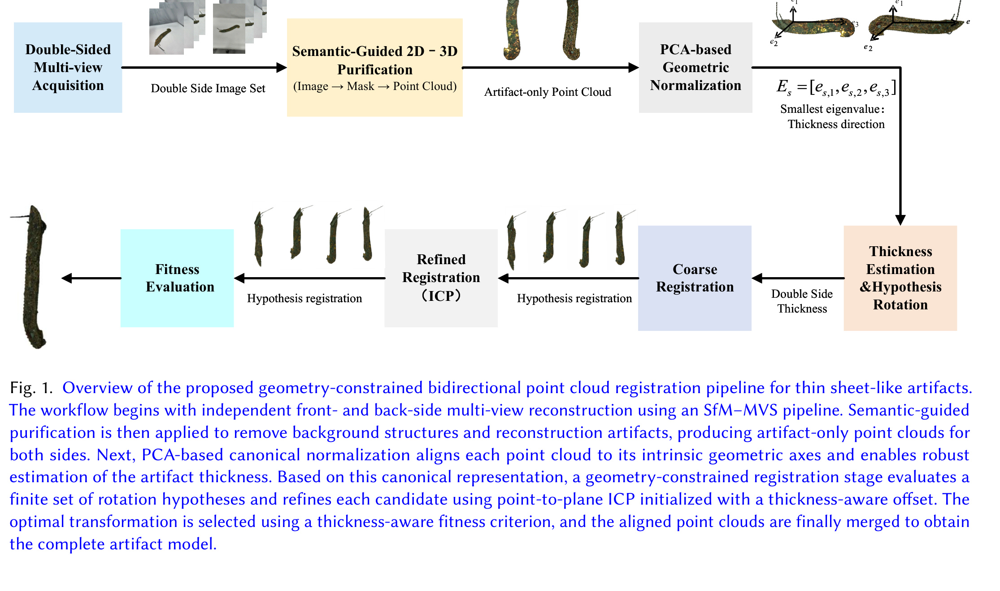
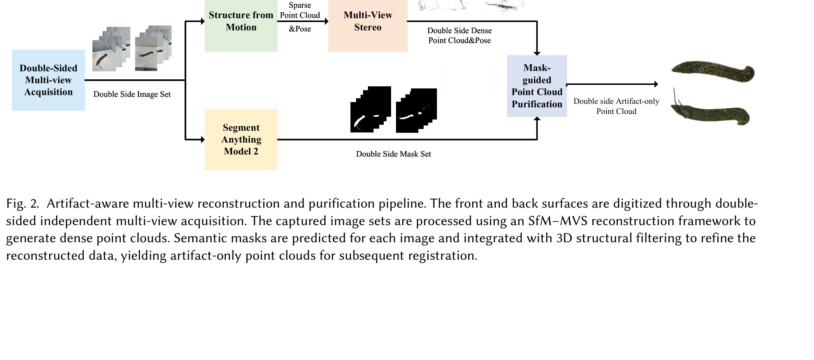

Object 6large registration result
Abstract
Thin cultural heritage artifacts are difficult to register because their sheet-like shapes provide limited thickness, weak geometric support, and ambiguous correspondences between partial scans. This project introduces a geometry-constrained bidirectional point cloud registration strategy for such artifacts. The method reasons about possible geometric hypotheses, uses local structural details to constrain alignment, and evaluates bidirectional consistency to obtain a stable merged point cloud. The videos below show the final registration results for multiple artifact cases.
Method
The pipeline first analyzes the thin artifact geometry and local surface evidence, then compares bidirectional registration hypotheses to select the alignment that best preserves the artifact structure. The figures below summarize the process and the visual cues used during registration.


Visual Results
The following videos are the registration results. Each sequence loops automatically and can also be played manually with the video controls.
Object 3registration result
Object 5registration result
Object 7registration result
Object 8registration result